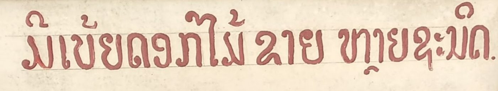

ມີເບ້ຍດອກໄມ້ຂາຍ ຫຼາຍຊະນິດ
ມ ເ ບ ◌້ ຍ ດ ອ ຂ າ ຫ ◌ຼ ຊ ະ ນ ◌ິ
ສະບາຍດີ ນ້ຳຕົກຕາດ ປະເທດລາວ ໐໑໒໓໔໕໖໗໘໙
สวัสดี น้ำตก ประเทศไทย ๐๑๒๓๔๕๖๗๘๙
សួស្តី កម្ពុជា ទឹកធ្លាក់ ០១២៣៤៥៦៧៨៩
Garden · Waterfall 0123456789 ₭ ฿ ៛
ກ ຂ ຄ ງ ຈ ສ ຊ ຍ ດ ຕ ຖ ທ ນ ບ ປ ຜ ຝ ພ ຟ ມ ຢ ຣ ລ ວ ຫ ອ ຮ ໜ ໝ ຫຼ